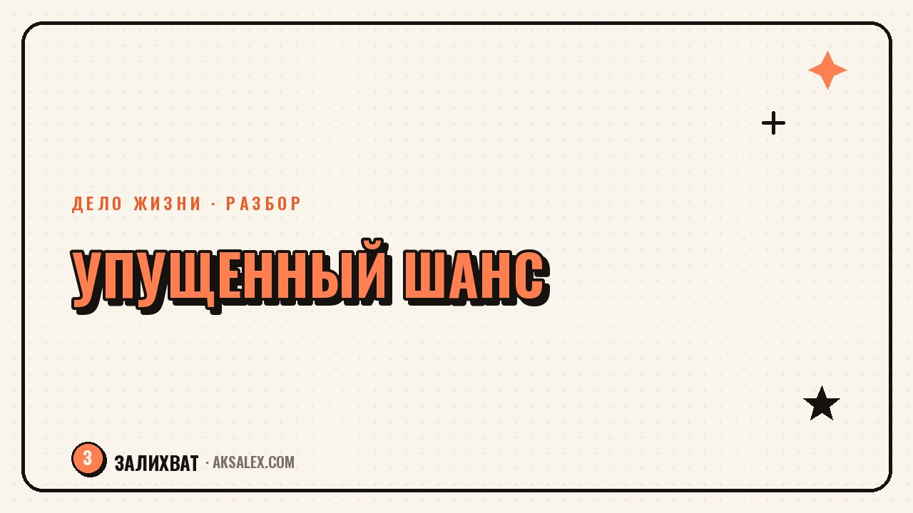

Что делать, если кажется, что упустил свой шанс

Знакомые уже открыли своё дело, переехали, сменили профессию, а ты до сих пор думаешь, стоит ли начинать. В голове крутится одна мысль: момент упущен, время ушло, те, кто начал раньше, теперь далеко впереди. Это тяжёлое чувство, и оно редко уходит само от одной мотивационной фразы. Разберём, откуда оно берётся на самом деле и что с ним делать, если хочешь не застрять в сожалении, а всё-таки начать.
Откуда берётся чувство упущенного шанса
Это чувство редко про реальные цифры и факты - оно про сравнение себя с чужим путём, который кажется более прямым, чем был на самом деле. Ты видишь результат другого человека через несколько лет работы, а свою точку старта - сегодня, без опыта и результата. Сравнение заведомо нечестное, но мозг его проводит автоматически.
Добавь к этому возраст, обязательства, кредиты, детей - всё то, что кажется весомым аргументом «уже поздно». На деле же большинство людей, которые начали новое дело в сорок, пятьдесят или позже, в моменте чувствовали ровно то же самое: страх, что время упущено. Чувство не исчезает перед стартом - оно просыпается рядом с ним.
Чувство упущенного времени почти никогда не говорит правду о реальных шансах - оно говорит о страхе перед первым шагом, который легче спрятать за разговором о возрасте.
Почему сравнение с чужим путём обманывает
Соцсети показывают результат, а не процесс - человек, который сегодня уверенно ведёт своё дело, пять лет назад тоже сомневался, пробовал неудачные варианты и терял время на то, что не сработало. Эта часть истории почти никогда не попадает в ленту, поэтому путь выглядит прямым и быстрым, хотя не был таким.
Ещё одна ловушка - сравнивать свой нулевой опыт с чужим пятилетним стажем в той же области. Это как сравнивать свой первый урок вождения с водителем, который за рулём десять лет. Разница в опыте не означает упущенный шанс - она означает только разницу в точке отсчёта.
Вопросы, которые разрушают нечестное сравнение
- Сколько лет этот человек на самом деле занимается тем, чем занимается
- Какие попытки у него не получились до текущего результата
- Что из его истории я не вижу, а вижу только итог
- Откуда я взял критерий «правильного» возраста для старта
- Что изменится в моей жизни, если я продолжу ждать ещё год
Что реально меняется со временем, а что нет
Честно: что-то действительно меняется с возрастом и обстоятельствами. Энергии может быть меньше, свободного времени тоже, риск ощущается острее с семьёй и обязательствами. Отрицать это не нужно - но из этого не следует, что начинать бессмысленно, следует только то, что начинать придётся по-другому, чем в двадцать лет.
При этом опыт, связи, деньги на подушку безопасности, понимание себя - всё это у взрослого человека обычно больше, чем в молодости, и это сильные стороны, а не только потери. Старт в сорок отличается от старта в двадцать не тем, что он хуже, а тем, что выглядит по-другому.
Как возраст старта влияет на стратегию
Разный возраст и объём обязательств требуют разной скорости старта - это не повод отказаться, а повод выбрать подходящий темп.
| Ситуация | Главный ресурс | Главный риск | Разумная стратегия |
|---|---|---|---|
| Начало без семьи и ипотеки | Время и гибкость | Нехватка опыта и связей | Можно действовать быстро и пробовать смело |
| Начало с семьёй и работой | Опыт и финансовая подушка | Меньше свободного времени | Начинать параллельно с основной работой |
| Начало после смены профессии | Навыки из прошлой сферы | Чувство, что всё заново | Искать, что из старого опыта переносится в новое |
| Начало после долгой паузы | Мотивация и ясность цели | Страх, что отстал от рынка | Сначала изучить, что изменилось, потом действовать |
Маленькие шаги вместо попытки догнать упущенное
Попытка догнать воображаемый график другого человека - верный путь к выгоранию в первый месяц. Вместо этого полезно спросить: что я могу сделать на этой неделе, независимо от того, сколько лет прошло. Это снимает давление сравнения и возвращает внимание к конкретному действию.
С чего начать на практике
- Выбери одно маленькое действие в сторону идеи на эту неделю
- Найди человека, который начал похожее дело в похожем возрасте
- Запиши свои реальные сильные стороны, а не только то, чего не хватает
- Дай себе срок на пробу вместо решения на всю жизнь сразу
- Отмечай движение вперёд, а не расстояние до чужого результата
Когда сожаление перерастает в нечто большее
Лёгкая грусть о нереализованных возможностях - нормальная часть жизни, с ней можно жить и всё равно двигаться дальше. Но если чувство упущенного времени превращается в постоянную тяжесть, мешает радоваться текущим успехам и не отпускает месяцами, это стоит обсудить с психологом, а не только с собой.
Разница в том, что грусть подталкивает к действию, а застрявшее сожаление держит на месте. Если замечаешь второе, это сигнал, что нужна помощь, а не ещё одна попытка справиться усилием воли.
Частые вопросы
Правда ли, что после определённого возраста поздно начинать новое дело?
Нет жёсткой границы, после которой начинать бессмысленно - меняется не возможность, а стратегия старта. Опыт, деньги на подушку безопасности и понимание себя у взрослого человека часто становятся преимуществом, а не препятствием.
Как перестать сравнивать себя с теми, кто уже добился результата?
Помогает вопрос, сколько лет человек на самом деле шёл к результату и что из его пути не попало в ленту соцсетей. Сравнение итога с чужим стартом почти всегда нечестное по отношению к себе.
Что делать, если чувство упущенного времени мешает действовать?
Начни с одного маленького шага на этой неделе вместо попытки сразу догнать воображаемый график другого человека. Движение вперёд, даже маленькое, снижает тяжесть чувства лучше, чем бесконечные размышления о нём.
Как понять, что сожаление о прошлом переросло в проблему?
Если сожаление не отпускает месяцами, мешает радоваться текущей жизни и держит на месте вместо того, чтобы подталкивать к действию, это повод обратиться к психологу. Грусть и застрявшее сожаление - разные состояния, и второе не проходит само.
Стоит ли вообще начинать новое дело, если конкуренты уже далеко впереди?
Чужой опыт впереди не закрывает твою нишу - у тебя будут свои сильные стороны, своя аудитория и свой путь, отличный от чужого. Начинать стоит ради своей цели, а не ради гонки за чужим результатом.
Раз тема оказалась полезной, вот что почитать следующим. Что делать, если выбор между двумя путями пугает: разбор без лёгких ответов, но с конкретными шагами.
Читать статью →а не вручную